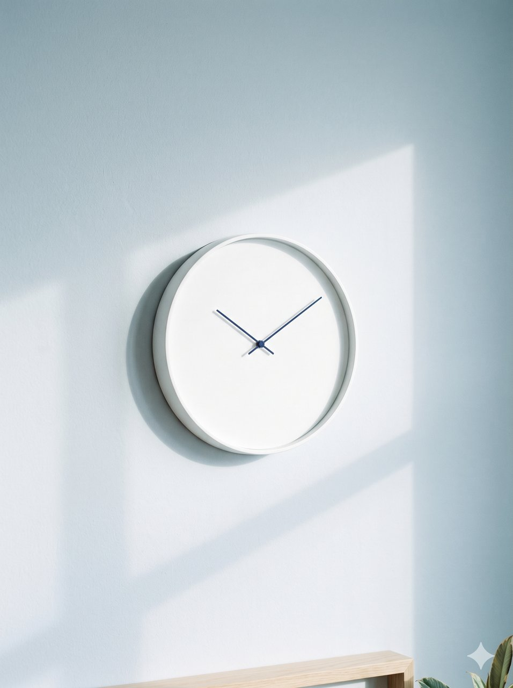

디자인 표준 확인 화면
제품 디자인 시스템 C 청량 · 파랑 · 라이트 고정. 캔버스 1280 × 720(80rem × 45rem), 시스템 글자 단계 + 덱 큰 글자(히어로 · 핵심 숫자). 값은 src/ds/tokens.css, 덱 뼈대는 src/deck.css. 2026. 10. 21. 개선 3단계(2회차 검수 반영) — 장 안 모션 없음 · 누를 수 없는 강조는 text-1 · 갈색 계열 점 네모 · 도식 마디 상자 없음 · 차트 구간은 시작선. 최종 단계(3회차 검수 반영) — 읽어야 하는 단서는 각주(.footnote, 13 · text-2) · 조작부 쉬는 모양(투명도 없이 면만 지움) · 숫자 칸 172(2열) · 그림 비율 여섯 가지 · 범주 이름은 열 시작선.
색 — 의미 토큰만
절 색 · 절 표시(.section-tag)
C 청량에서 상태 색 · 비슷한 색 · 주장 라벨을 빼면 파랑 · 노랑만 남아 절마다 번갈아 쓴다(색에 뜻 없음, CO-15). 정본은 design-standard/color.md 표 — build.ts가 대조한다.
차트 계열 색 · 같은 대상은 같은 색
파랑 · 갈색은 흑백에서 같은 명도라 갈색 계열 점은 네모(dot--sq), 파랑 · 중립은 원. 맥락 계열 선 · 점 · 막대는 중립 데이터 색(이름표 text-2), 선 차트의 맥락 계열은 파선(dash: true), KDI는 점선(dash: "dot")(CN-122). 표에 없는 대상은 핵심 = 파랑, 맥락 = 중립. 정본은 color.md 「차트 계열 색」 — build.ts가 chart-data와 대조한다.
글자 — Pretendard, 시스템 단계 + 덱 큰 글자(1280 캔버스, 1920 화면에서 1.5배)
덱 display · 44/52 · 700
히어로 제목(1장)
덱 figure · 36/44 · 700
320만 개
type-title-1 · 26/32 · 700
쪽 제목은 한 장에 하나예요
type-title-2 · 22/28 · 700
105일
type-heading · 18/24 · 600
묶음 제목 · 차트 제목 · 짧은 묶음(.block) 제목 · 히어로 부제
type-body · 15/24 · 400
본문 문단. 한글은 어절 단위로 줄을 바꾸고, 문장 속 숫자 2036년은 비례 폭이에요.
type-body-strong · 15/24 · 600
묶음 항목 제목 · 핵심 한 문장 · 값
type-label · 13/20 · 400
항목 설명 · 표 칸(모든 표 한 값) · 차트 주석 · 각주(.footnote, text-2)
type-label-strong · 13/20 · 600
표 머리 · 꼬리표 · 차트 계열 이름
type-caption · 12/16 · 400
출처 · 쪽 번호 · 차트 눈금 · 그림 캡션(12px이 바닥, TY-08)
히어로 — .slide.hero(실제 크기 1280 × 720)
실제 1장(src/slides/01.html)과 같은 마크업. 왼쪽 6열에 큰 제목(display) → 16 → 부제 · 설명(.stack 8) → 64 → 두 숫자(figure--display, text-1 — 누를 수 없는 강조라 파랑 아님), 오른쪽 7열 시작선부터 장 가장자리까지 그림(radius-0, 오른쪽 아래 기준으로 자름 — 워터마크 보존, 비유 그림이라 alt 빈 값).

AI는 언제쯤
내 일을 대신하게 될까요
AI가 AI 개발을 돕기 시작한 뒤의 10년
AI가 맡을 수 있는 일이 얼마나 빨리 커지는지, 전문가들이 자동화 예상 시점을 어떻게 바꿨는지를 공개 데이터로 쟀어요. 이렇게 잰 관계들을 이어 2036년 한국 일자리를 추정했어요.
105일마다 두 배
AI가 맡을 수 있는 업무 크기 기술
2024년 이후 두 배가 되는 데 걸린 기간
약 320만 개
2036년 대체 압력 추정
2036년 말까지 쌓인, AI·자동화로 사람이 빠질 수 있는 일자리 수(기준 시나리오 모형 값)
라벨 뜻: 기술(있는 그대로 적음)은 정확한 집계나 함께 움직임(원인 아님), 추정은 가정을 둔 계산, 직접은 원문 확인, 2차는 재인용이에요. 모든 라벨 뜻은 34장에 있어요.
장 뼈대 — 절 표시 · 머리 · 본문 · 핵심 · 꼬리말(실제 크기 1280 × 720)
실제 고용
제목 + 차트 + 그림 + 묶음 패턴이에요
절 표시는 제목 첫 줄 끝 쪽(기준선 맞춤). 설명 문단은 한두 줄(읽기 폭 40em).
AI 노출도 5분위별 합계 고용 변화율 (%)
charts.js hbar · chart-data.json occ_quintile 그대로
BLS OEWS · n = 770 직업 기술

읽는 법
+0.3%
노출 상위 10% 직업의 고용 변화
항목 제목
제목 + 설명 사이 8
핵심 한 문장은 상자 없이 위 가는 선 + 본문 굵게로, 본문 맨 아래 같은 자리에 둬요.
그림 — figure.media(생성 이미지는 캡션 없음)
바탕 · 테두리 · 그림자 없이 radius-2만(카드 아님). 기본은 원래 비율, 자를 때는 data-ratio 여섯 가지(16:9 · 3:2 · 4:3 · 1:1 · 3:4 · 2:3) 중에서만 고르고 높이는 4로 반올림해요. 기준점은 오른쪽 아래(Gemini 워터마크가 그 모서리에 남는다). 생성 이미지에는 캡션을 달지 않고 34장 꼬리말에서 한 번에 밝혀요(쓴 장 번호 + MANIFEST 경로). 그림에 관한 단서는 그림 밖 각주로. 아래는 왼쪽부터 원래 비율(data-ratio 없음) · 1:1 · 3:2예요.



각주(그림 밖): 4:3 원본의 위를 잘라 오른쪽 아래 워터마크를 남겨요.
간격 — 8 단위
장 여백 위 48 · 좌우 64 · 아래 32(layout-margin) · 머리→본문 40 · 본문 묶음 사이 32 · 열 사이 24 · 꼬리말 높이 49 · 항목 사이 선 위아래 16 · 항목 안 8 · 칸 사이 선 양옆 24. 남는 높이는 늘리지 않고 본문 아래 빈 곳으로(SP-60).
모서리 · 선 · 조작부
선은 모두 border-1(1px). border-2는 초점 고리 · 차트 선 · 도식 화살표 · 개요 지금 장 고리만(OP-14). 장 안에는 바탕 상자 · 그림자 · 둥근 묶음 상자가 없어요(카드 없음).
장34 / 34
배너 없음: 키 안내는 막대 안 캡션 글(자리가 모자라면 숨김), 마지막 장은 34 / 34 + 「처음으로」(house = 처음 장, IC-03). 진행 표시는 시스템 마크업(이름 「장」 + 값, 트랙이 progressbar) — 발표 무대 바탕 위에서는 트랙을 fill-1로. 「다시 재생」은 장 안 모션을 없애 뺐다. 좁은 화면에서는 아이콘 버튼이 28 정사각 아이콘만(OP-14).
패턴 — 묶음(카드 없음) · 숫자 · 번호 · 이름 ↔ 값 · 표 · 시간축 · 도식
묶음은 바탕 · 바깥 테두리 · 모서리 없이 제목(type-heading)과 항목 사이 가는 선으로만 나눠요. 위아래를 닫는 선이 없어 핵심 한 문장 · 꼬리말 선과 겹치지 않아요.
숫자 줄 · .group__row--stat
105일
AI가 맡을 수 있는 업무 크기가 두 배로 느는 데 걸린 기간(2024년 이후)
320만 개
2036년 기준 시나리오 대체 압력
번호 줄 · .group__row--step
- 1
AI는 얼마나 빨리 강해지고 있나요
업무 크기가 두 배가 되는 기간
- 2
전문가 예상도 함께 앞당겨졌나요
AGI 예상 연도의 변화
내용 줄 · .group__row
큰 숫자
대체가 본격화하는 해(대체 압력이 최대치의 절반 가까이 쌓이는 해)
작은 숫자
AI가 그 직급의 업무를 80% 확률로 해내는 해
이름 ↔ 값 줄 · .group__row--pair
텔레마케터
−39.5%
가로 칸 · .group__cols + .group__cell(기본 3칸, data-cols="2"·"4", 칸 시작이 12열 선)
105일
칸 시작 64 · 456 · 848(4 · 4 · 4열), 칸 사이 24, 세로 선은 그 가운데
3.5배
바탕 · 바깥 테두리 · 위아래 닫는 선 없음
94%
묶음 안에 묶음을 넣지 않아요
표 · .table.table--wrap(시스템 표 그대로: 선 없이 둥근 행, 칸 글자 type-label) + 여러 줄 칸 변형 .table--multiline(칸 첫 줄 기준선 맞춤)
2026~2027
신입 채용이 먼저 감소
.timeline > .timeline__item(기본 4칸)
2028~2030
사무직 대체 시작
data-current = 때 글자 text-1(나머지 text-2, 파랑 아님) · 「지금」은 글자로
2031~2033
로봇이 현장 업무로
때 · 제목 · 설명
2034~2036
일자리 열 개 중 하나
세로 시간축은 .timeline--vertical(줄 높이 = 내용)
핵심 한 문장 · .takeaway — 위 가는 선 + 본문 굵게, 한 줄
각주 · 단서 문장 · .footnote — 라벨 13 · text-2(읽어야 하는 주석은 text-3에 싣지 않는다) 추정
모션 — 기능 모션만(controls.css :root, 시간 · 곡선은 시스템 토큰)
- motion-page-slide-in(들어오는 장: 투명도 + 넘기는 쪽에서 48, duration-4 · expressive — 정본 「쪽 전환」 단계) · motion-page-fade-out(나가는 장: 제자리 투명도만, duration-3 · productive).
- motion-controls-fade-move(포인터가 멈추면 조작부 버튼의 면 · 테두리가 사라지고 글자가 text-3으로, duration-2 · productive — 투명도는 쓰지 않는다, 글자 4.5:1 유지 · OP-14).
- 장 안 차례 등장 · 차트 단계 모션은 없앴다(2026. 10. 21. — 정본 MO-01 · 02). 「다시 재생」 버튼 · R 키도 뺐다.
- 키보드로 넘기면 장 전환 · 조작부 쉬는 모양 전환이 모두 바로(MO-03). 동작 줄이기는 투명도만(MO-05). 렌더 · 인쇄는 처음부터 최종 상태.